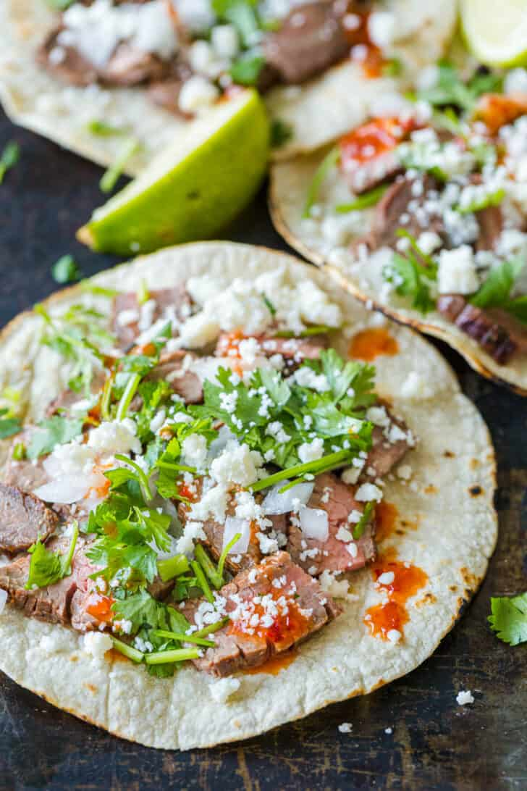

Home
Carne Asada Street Tacos

| Prep Time: |
Cook Time: |
Marinating Time |
Total Time: |
15 MIN |
10 MIN |
6 HOURS |
6 HOURS 25 MIN |
Serves 8 people
Ingredients
- 2 lb Flank Steak
- 1/4 cup lime juice, (from 2-3 limes)
- 1/4 cup orange juice, (no pulp)
- 1/4 cup soy sauce
- 3 Tbsp olive oil
- 1 cup chopped cilantro, plus more to serve
- 7 garlic cloves, finely chopped
- 2 tsp chili powder
- 1 tsp cumin
- 1 tsp salt
Instructions
- In a large shallow bowl or casserole dish, combine the marinade ingredients:
lime juice, orange juice, soy sauce, olive oil, chopped cilantro, garlic, chili powder, cumin, and salt.
Place Flank Steak into the marinade and turn several times to coat.
- Cover with plastic wrap and marinate in the refrigerator for at least 6 hours and preferably overnight.
Turn the steak once while marinating.
- Preheat the grill to medium-high heat. Place marinated steak onto the hot grill and cook 3-5 minutes
per side, flipping once or until the steak has reached the desired doneness
(145˚F for medium-rare and 160˚F for medium doneness).
- Remove from the grill, tent with foil, and rest 5-10 minutes then thinly slice against the grain.